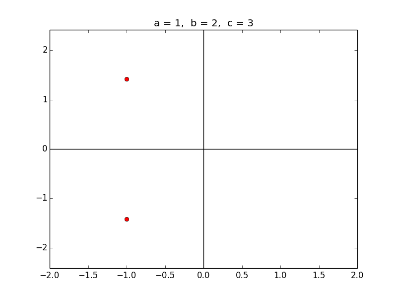

Homework 1 [2014]¶
Due Wednesday, April 9, 2014, by 11:00pm PDT. See below for how to submit.
Warning
Part 10 was recently added. The assignment is now complete.
The goals of this homework are to:
- Make sure you are familiar with basic Unix commands (see Unix, Linux, and OS X) and an editor, (see Text editors),
- Start using git (Git) to download course materials,
- Create your own bitbucket repository to keep your coursework and post homeworks to be graded.
- Make sure you have some necessary software installed. (If you use SageMathCloud, you should have everything needed.)
Start early on this assignment so that you can get help from the TAs and/or discussion board if you have trouble with software or with using git.
Before tackling this homework, you should read some of the class notes and links they point to. In particular, the following sections are relevant:
- Unix, Linux, and OS X
- Using SageMathCloud (and Computing Options [2014 version] if you plan to compute elsewhere)
- Text editors
- Git
- Bitbucket repositories: viewing changesets, issue tracking
- Bibliography and further reading
By doing this homework you create a bitbucket repository containing some files that we can view to grade.
See also the Bitbucket 101 instructions for more tips on setting up bitbucket accounts and using git.
Make sure you have access to git on the computer you plan to use. Typing
$ which gitin a terminal window should return a path to the git command. Read the section Git and the documentation linked from there in order to get a sense of how it works.
Clone the class repository following the Instructions for cloning the class repository.
Make sure you have set the environment variable UWHPSC since this is used below.
Set up your own personal repository on Bitbucket, by carefully following all of the instructions at Creating your own Bitbucket repository. By following these instructions you will also create a clone of the repository and add some files to it.
Make sure you have set the environment variable MYHPSC since this is used below.
In the clone of your repository, create a subdirectory homework1:
$ cd $MYHPSC $ mkdir homework1You should now be able to cd into this directory:
$ cd homework1or later you can get there from anywhere via:
$ cd $MYHPSC/homework1Copy some files from the class repository to your own repository by:
$ cp $UWHPSC/homeworks/homework1/* $MYHPSC/homework1
- This should create the files
- test1.py
- test2.sh
- test3.f90
in the directory $MYHPSC/homework1.
Use git add and git commit to add these three files and commit a snapshot.
Modify test1.py as instructed in the docstring at the top of the file. Try running it via:
$ python test1.pyIt should give results like the following:
Code run by Your Name Environment variable UWHPSC is /somepath/uwhpsc Environment variable MYHPSC is /somepath/myhpsc Imported numpy ok Imported matplotlib ok Imported pylab okFollowing the instructions, you will add and commit to files, a modified version of test1.py and the output file test1output.txt.
Modify test2.sh as instructed in the comments at the top of the file.
Run this bash shell script via:
$ bash test2.shThis should give output something like the following:
Environment variable UWHPSC is /somepath/uwhpsc Environment variable MYHPSC is /somepath/myhpsc which ipython returns... /somepath/ipython which gfortran returns... /usr/local/bin/gfortran gfortran --version returns... GNU Fortran (Ubuntu/Linaro 4.6.3-1ubuntu5) 4.6.3 [more stuff] Compiling and running a Fortran code... Code run by Your Name Successfully ran Fortran 90 programNow run it again and redirect the output to a file:
$ bash test2.sh > test2output.txtAdd and commit the modified test2.sh and the output files to your repository.
Note: At the end you should have the following files committed to your repository:
- $MYHPSC/testfile.txt
- $MYHPSC/homework1/test1.py
- $MYHPSC/homework1/test1output.txt
- $MYHPSC/homework1/test2.sh
- $MYHPSC/homework1/test2output.txt
- $MYHPSC/homework1/test3.f90
Do not check in the file a.out, which was created when the Fortran code was compiled.
For this part you might want to use an IPython notebook to experiment with the code, but please turn in the modified hw1.py file as described below.
The file $UWHPSC/homeworks/homework1/hw1.py contains modified versions of the Python functions qroots and plotq discussed in Lab 2. Copy this file to your directory $MYHPSC/homework1/hw1.py and modify it as described.
Also copy the script $UWHPSC/homeworks/homework1/run_hw1.py that can be used to print out the roots and create the plot. Set the desired values of a,b,c in this file and then type:
$ python run_hw1.pyIn particular, qroots has been modified to work also if the roots are complex. The function plotq has been modified slightly so that it plots the quadratic function as a function of a real variable x and then plots the real part of the the two roots as red dots on the x axis. These plots look fine if the roots are real, but are misleading if the roots are complex.
Modify the function plotq so that it produces the same plot as currently if the roots are real, but if the roots are complex it instead gives a plot of the x-y plane that shows the location of the two complex roots as red dots (where x is the real part and y the imaginary part of the root`. So for example, if the coefficients are specified as:
a = 1. b = 2. c = 3.then the code should produce a plot that looks like this:
Note that you should draw both the x and y axis and choose xlimits and ylimits so that the roots and the origin are in view. You can use:
xlower = -abs(x0) - 1 xupper = abs(x0) + 1 ylower = min(y0, y1) - 1 yupper = max(y0, y1) + 1(Recall that complex roots always come in conjugate pairs if the coefficients a,b,c are real, and you can assume this is the case.)
Note: Setting the values of a,b,c in run_hw1.py appropriately and executing:
$ python run_hw1.pyshould now produce the above plot and the output:
a = 1, b = 2, c = 3 The roots are: z0 = -1 + -1.41421j z1 = -1 + 1.41421j Created roots_plot.pngNote: To grade this part of the homework, we will run a modified version of this script that uses several different sets of coefficients a,b,c so you should test your code for various reasonable sets of coefficients to insure it is working properly. (You can assume a,b,c will be real.)
At the end of this part you should also commit the following files to your repository:
- $MYHPSC/homework1/hw1.py (your improved version)
- $MYHPSC/homework1/run_hw1.py (can be the original version)
Make sure the copies you want graded have been committed, and then push them to bitbucket via:
$ cd $MYHPSC # or you can be in any subdirectory $ git pushThese files should then also be visible from your bitbucket webpage, by clicking on the “Source” tab, see Bitbucket repositories: viewing changesets, issue tracking.
You created a private repository, so you will have to give us permission to view or clone it. Do so by clicking on the Gear tab at the top of your Bitbucket page for this repository, then on “Access Management”, and then add the following three users with Read access: rjleveque and the TAs smoe and mvelegar.
Submit the commit number that you want graded by following the link provided on the Canvas page for Homework 1 If you submit the wrong thing or make further changes to your work before the due date, you can simply resubmit new information at the same link.
{kind=link}
Note: You can commit to your repository and push changes to bitbucket as often as you want before the submission, and you are encouraged to get in the habit of commiting changes often as you develop code – that’s the whole point of using version control!